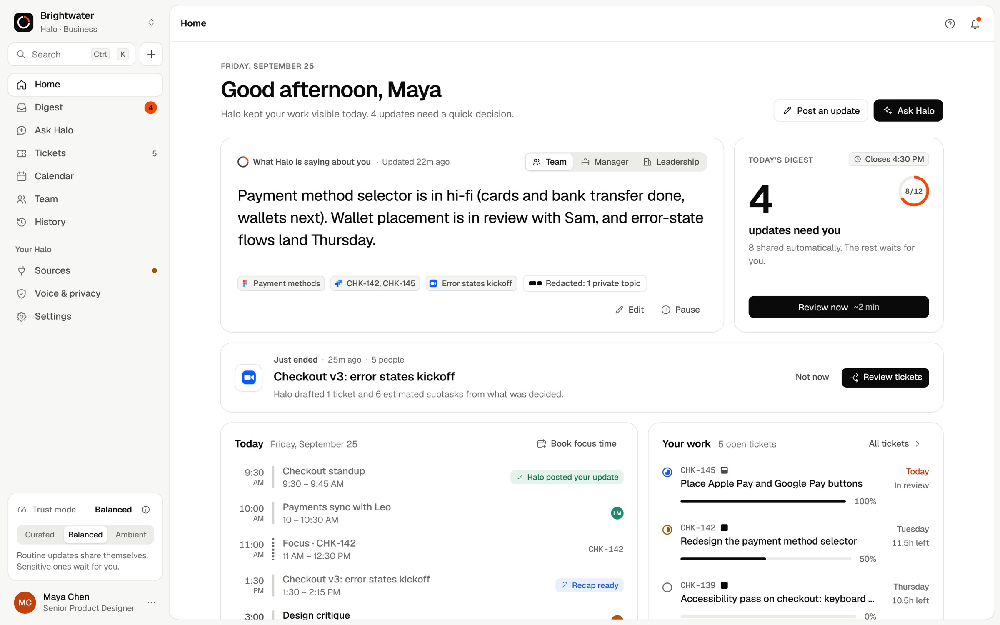
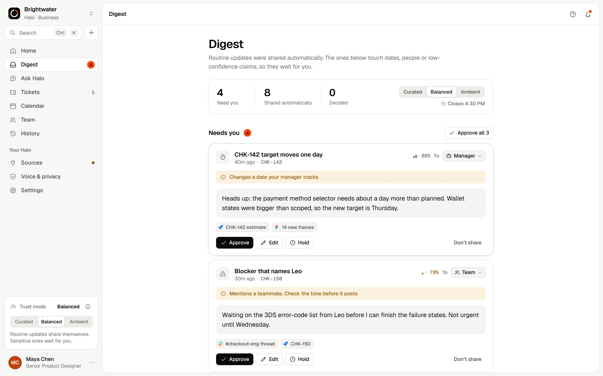
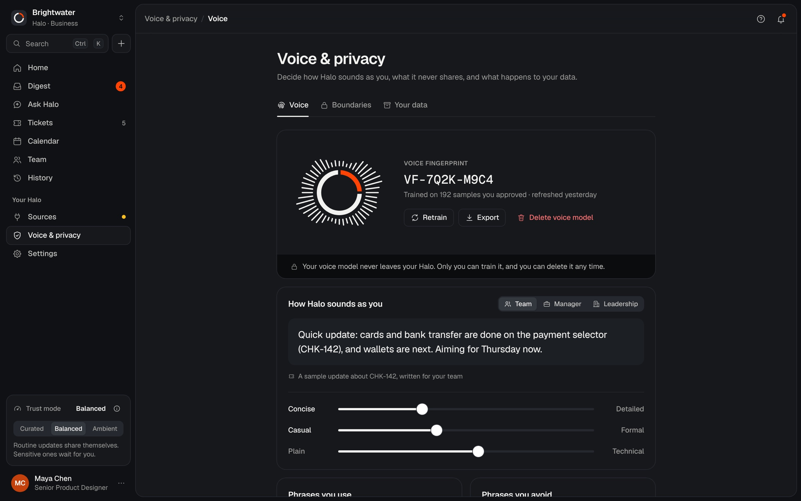
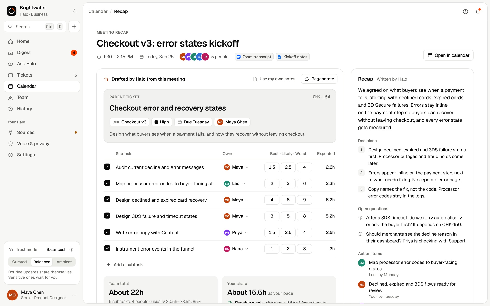

1The spark
The work behind the work.
At the startups I worked at, I kept running into the same gap. Good people, me included, spent hours every week making their work visible instead of doing it.
The tools built to fix this only work when someone stops to update them.
That frustration turned into curiosity. What if your work could speak for itself, in your own voice?
2Asking around
So I started asking.
I interviewed colleagues from two startups, Jetzy and Greenopia, kept anonymous, across the three roles that live with status work every day.
Individual contributor
45 min · about 13 questions
Manager
45 min · about 13 questions
Freelancer
45 min · about 13 questions
The interview guide, the same shape for every role45 min
One set of facts, three different readers.
Three roles, three readers of the same work. That became the core idea: one update, written at the right altitude for whoever asks.
3What already exists
Every tool asks someone to type the update.
Ticket trackers
Jira · Linear · Asana · Monday.com · ClickUp
Only as current as the last manual update. Jira’s navigation runs deep and is easy to get lost in.
Meeting note-takers
Fireflies · Otter · Fellow
Capture what was said in a meeting, not the work that happens around it.
Halo
The gap I designed for
Reads the signal you already create, writes in your voice, and asks before anything sensitive is shared. Everything is one click from home.
The stance: an advocate for the person doing the work, never a monitoring tool for their manager. It speaks for you, not about you.
4Testing the idea
Then I tried to break it.
Before designing a single screen, I wrote down ten hard objections and a design answer for each.
Version 1
Wizard of Oz
A low-fi prototype where a person played the AI behind the scenes, to test the idea before building it.
Version 2
13 screens, high fidelity
A navigable prototype of the full product, from the dashboard to meeting recaps.
What testing changed
“Let me see it first.”
People wanted to review what Halo shares before anyone else sees it. That one note reshaped the product.
LimitationVersion 1 was always shown first, so novelty could have shaped the results. I flagged it in my write-up.
5Shaping it
Trust became a dial, not a promise.
Instead of picking one level of automation for everyone, I designed three, and let people turn it.
Balanced, the default
Routine updates share themselves. Sensitive ones wait for a once‑a‑day digest.
4of 12 updates wait for you today
Waits for your approvalShared automatically
Brand v1 · recreated from my notes
Warm paper, an amber glow and a serif. It read as religious, like a manuscript. I threw it out.
Brand v2 · shipped
Clean and precise: one Signal Orange, Geist, and a ring with a single segment.
6The product
Four ideas you can see on screen.

1 2 3- Switch the reader: team, manager or leadership.
- Private topics stay out, and Halo says so.
- 4 updates need you. 8 shared themselves.

1 2 3- The trust dial, right where the decisions are.
- Every held update says why it waited.
- Approve, edit or hold. Nothing sensitive sends without you.

1 2 3- Trained only on samples you approved.
- Your voice model never leaves your Halo.
- Tune how you sound: concise, casual, plain.

1 2 3- Drafted from the meeting, not typed after it.
- A three-point estimate for every subtask.
- Decisions and open questions, written down.
7What shipped
A product, not a prototype.
- A working web app with live AI on Claude
- A proxy that keeps the API key off the browser
- Design tokens in W3C format
- 24-page brand guidelines
- An 84-second launch film and a 15-second cut
- WCAG 2.2 AA, keyboard, dark mode, reduced motion
8Looking back
What this project taught me.
- What I learned
- Trust works best as a control people can turn, not a promise.
- Where I struggled
- Balancing automation and control. Testers wanted to see updates first, so I added an approval digest.
- What I’d do differently
- Test both versions in random order, so novelty can’t skew the results.
See it working.
Halo is a product designed end to end by Matias Indacochea. The demo workspace, Brightwater, and everyone in it are fictional. Brand v1 is recreated from my notes; the screens are the shipped product.